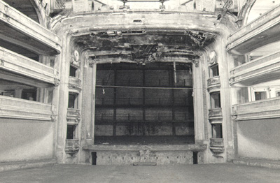

| Home |
Um dos episódios mais marcantes da história do Theatro é o incêndio ocorrido em 1980, que "calou" o prédio por 16 anos. A cobertura, o forro do palco e o interior do Pedro II foram destruídos pelas chamas que começaram na exibição do filme "Os Três Mosqueteiros Trapalhões". |
 |
Antes disso, desde 1970, o interior do Theatro já havia perdido grande parte de seus elementos, sendo descaracterizado para abrigar o cinema. Segundo o presidente da Fundação, Josué de Lima Peixoto, a grande mobilização de artistas da cidade e de todo o país foi o que deu início à luta pela recuperação do patrimônio. Em maio de 1982, o prédio foi tombado pelo Condephaat (Conselho de Defesa do Patrimônio Histórico Artístico, Arqueológico e Turístico do Estado de São Paulo) |
|
Geek Theory© 2012